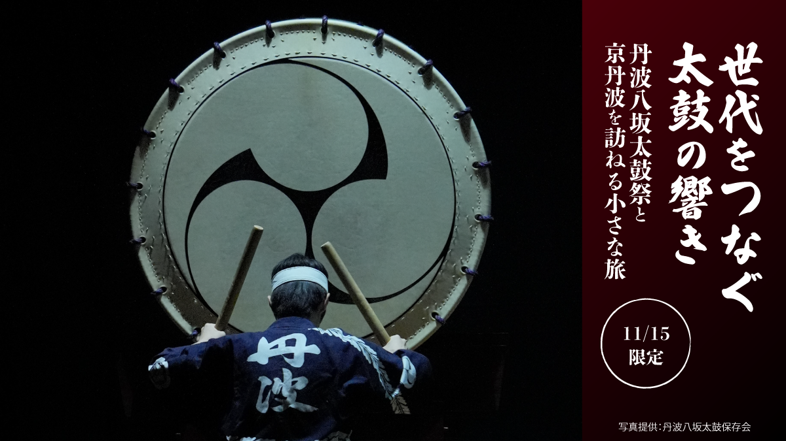
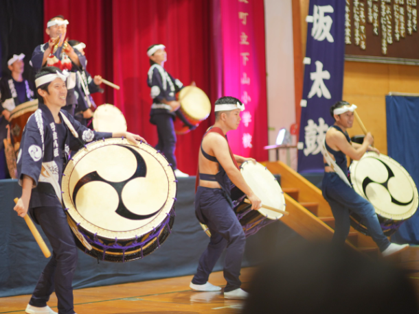

最新の情報は 公式サイトのツアーページ をご覧ください。
【11/15限定】世代をつなぐ太鼓の響き ～丹波八坂太鼓祭と京丹波を訪ねる小さな旅～

※大人・子供同額
※お食事のお席は確保しておりますが、メニューは当日お客様ご自身でお選びいただき、食券をご購入いただく形式です。なお、昼食代はツアー料金に含まれておりません。
※演奏写真は昨年度のものです（提供：丹波八坂太鼓保存会）
本ツアーの募集は終了いたしました
＜お問合せフォームはこちら▶＞
＜MKトラベルTOPはこちら▶＞
＜おすすめツアー一覧はこちら▶＞
世代を超えて受け継がれる、京丹波の伝統の響き。
京丹波の地で古くから受け継がれてきた郷土伝統芸能「丹波八坂太鼓」。
その力強い響きと、地域の人々が大切に守り続けてきた文化にふれる、1日限定の特別な旅へご案内します。
今回訪れる「第24回DONと来い／丹波八坂太鼓祭」は、江戸時代初期頃から疫病退散や五穀豊穣を願って受け継がれてきた「丹波八坂太鼓」の祭典です。
かつて人々が平穏な暮らしや豊かな実りを願い、太鼓に込めた想い。
その響きは長い年月を経た今も、京丹波の地で大切に受け継がれています。
今年は、丹波八坂太鼓保存会の結成55周年を記念する節目の開催。
地域の人々によって守られ、育まれてきた伝統芸能の力強い演奏を、ぜひ間近でご体感ください。
そして、もう一つ注目したいのが、地元・下山小学校の子どもたちによる演奏です。
地域の大人たちから子どもたちへ、世代を超えて受け継がれていく太鼓の音色。
そこには、単なる演奏の技術だけでなく、ふるさとの文化を大切にし、未来へつないでいこうとする人々の想いが込められています。
迫力ある太鼓の響きとともに、地域に根ざした伝統文化が次の世代へと受け継がれていく姿も、今回の旅ならではの見どころです。
また、太鼓祭の鑑賞だけでなく、京丹波ならではの食や特産品もお楽しみいただけます。
お昼は「道の駅 瑞穂の里・さらびき」に立ち寄り、地元の味覚を自由に楽しむ昼食タイム。
お食事のお席をご用意しておりますので、お好きなメニューをお選びいただき、ゆっくりとお過ごしください。
お帰りには「道の駅 京丹波 味夢の里」にも立ち寄ります。京丹波の特産品やお土産などのお買い物を通じて、この土地ならではの魅力にもふれていただけます。
観光地を巡るだけでは味わえない、地域の歴史や文化、そして人々の想いにふれる一日。
太鼓の音がつなぐ、ふるさとの過去・現在・未来。
京丹波に息づく伝統の響きを、ぜひ現地で感じてください。
行程
| 時間 | 場所 |
| 10:00 | 京都駅八条口ＭＫタクシーのりば（集合・出発） |
| 11:00 | 南丹PA |
| 11:30 | 道の駅 瑞穂の里・さらびき ＜昼食・お買い物／約60分＞ |
| 13:00 | 京丹波町立下山小学校 第24回DONと来い/丹波八坂太鼓祭 ＜13:00開場・13:30開演・15:00頃終了＞ |
| 15:20 | 道の駅 京丹波 味夢の里 ＜休憩・お買い物／30分＞ |
| 17:00頃 | 京都駅（解散） |
※渋滞等で予定通りの滞在時間をお取りすることができない場合がございます。予めご了承ください。
丹波八坂太鼓祭

写真は昨年度のものです（提供：丹波八坂太鼓保存会）
【MKトラベルLINE公式アカウント】
MKトラベルの新規ツアー情報をLINEでお届けいたします

【各SNSでも京都の情報やツアー情報をお届けしています】


旅行条件
| ツアー番号 | GS2373 |
| 出発地 | 京都市 |
| 添乗員／ガイド | なし（乗務員がその業務を代行いたします）／なし |
| 食事 | 昼食（自由食） |
| 最少催行人数 | 5名 |
お申込みについてのご注意
※最少催行人数は5名様です。最少催行人員に満たない場合は、旅行の実施を取りやめることがあります。出発の３日前にその旨をご連絡し、お客様から当社がお預かりしている旅行費用の全額をお返しいたします。
※旅行条件・旅行代金は、2026年10月1日現在を基準としています。
※行程および帰着時間は交通事情などにより変更になる場合があります。
※お申込みの前に弊社の募集型企画旅行規約をご確認ください。
よくある質問
Q.1名ですが、申し込みできますか？
A.はい。お一人参加の方もたくさんいらっしゃいますので、お気軽にお申し込みください。
Q.参加したかったけど、日程が合いません／終了していました
A.貸切で再現できる場合もございますのでご相談ください。お問合せフォームはこちら
本ツアーの募集は終了いたしました
＜お問合せフォームはこちら▶＞
＜MKトラベルTOPはこちら▶＞
＜おすすめツアー一覧はこちら▶＞
【WEBシステムよりご予約の場合】
・コンビニ決済
・クレジットカード決済
お支払方法詳細はこちら
お客様のご都合でご予約をキャンセルされる場合は、すみやかに下記お問合せ先までご連絡ください。
◆コンビニ決済をご選択の場合、支払期限を過ぎますとご予約は自動的にキャンセルとなりますのでご注意ください。
◆お客様のご都合でご予約をキャンセルされた場合、下記キャンセル料を申し受けます。お支払いいただきました旅行代金よりキャンセル料を相殺して、お客様へご返金させていただきます。
【店頭決済／銀行振込／コンビニ決済の場合】
お客様のご指定の口座へご返金させていただきます。
【クレジットカード決済の場合】
ご利用のクレジットカード会社を経由して、ご返金させていただきます。締め日のタイミングによっては一度請求が発生し、その後返金処理となります。キャンセル料
11日目に当たる日以前
無料
10日目に当たる日以前
20%
7日目に当たる日以前
30%
旅行開始日の前日
40%
旅行開始日の当日
50%
旅行開始後又は無連絡
100%